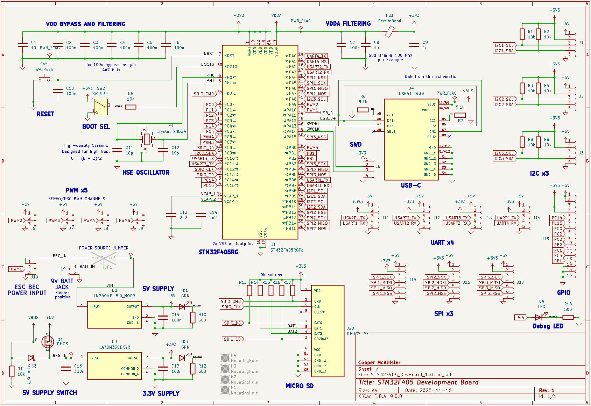
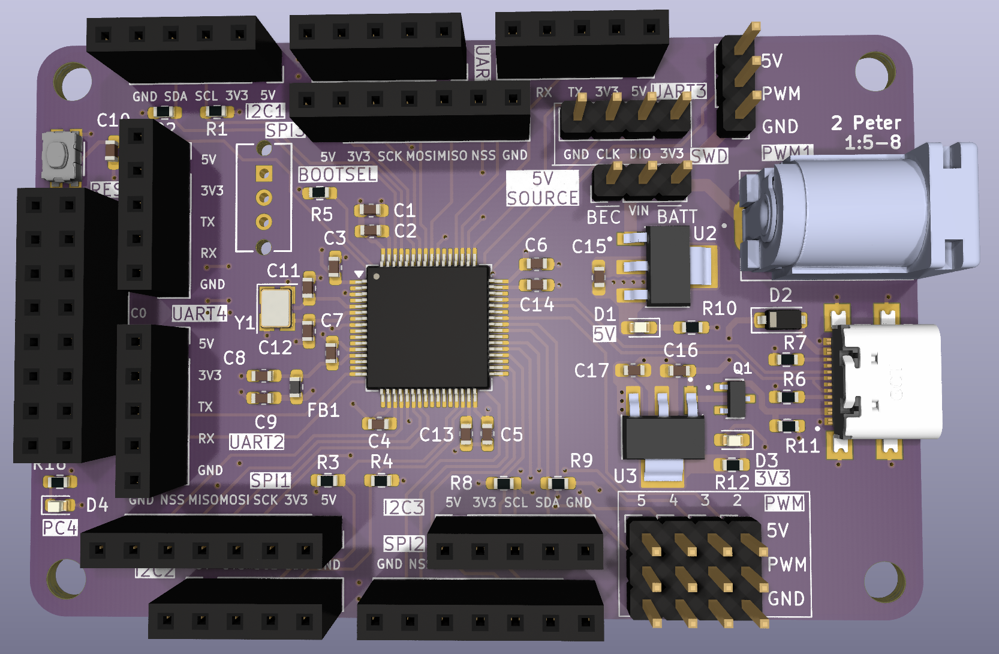
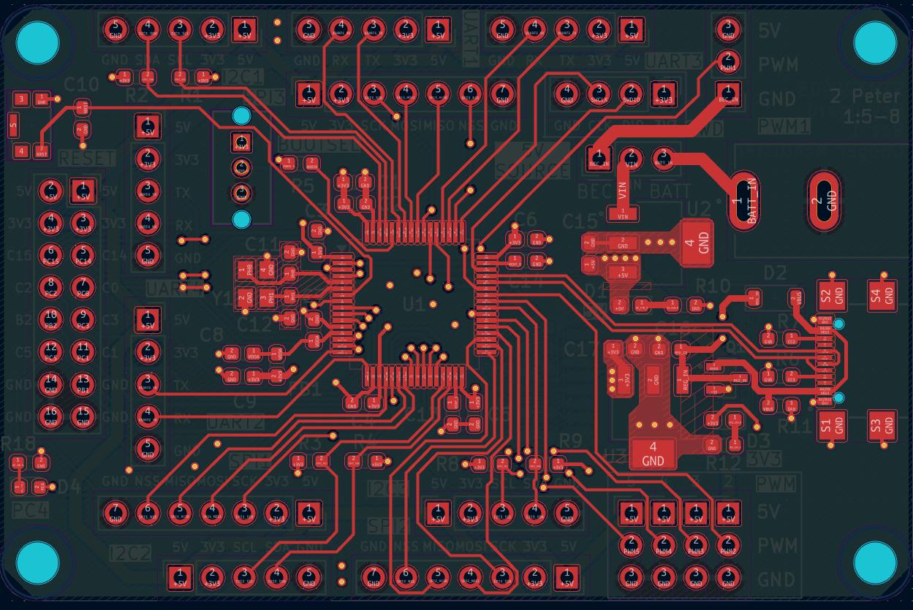
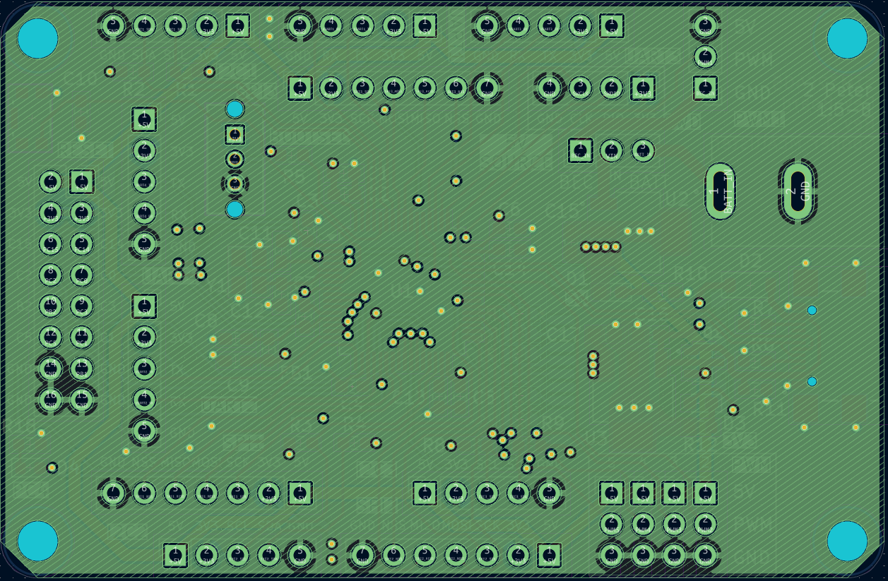
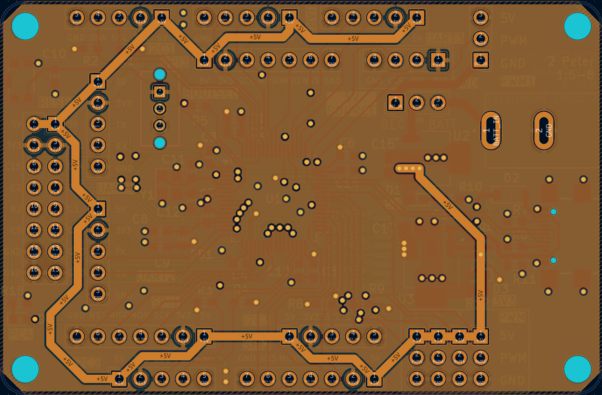
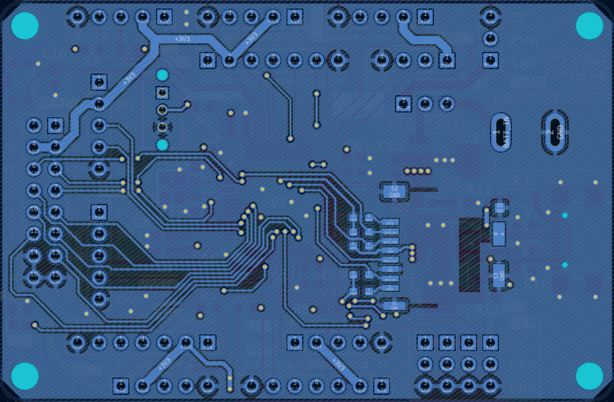

I just ordered the PCB for a development board I’m making for the STM32F405 microcontroller. The purpose of this board is to assist me in the development of future projects that I’ll use this chip for, and it also serves as an opportunity to improve my PCB design skills and learn SMD soldering. The board was designed with a UAV or RC vehicle application in mind, with the ability to be powered from a motor ESC BEC (battery elimination circuit).
The board includes the STM32, of course, with an 8MHz HSE oscillator. Since I plan to mostly use this board to connect to other peripherals, there are connectors on the board for 3 I2C, 4 UART, 3 SPI, and 5 PWM. There are also an additional 9 GPIO pins and one debug LED. Additionally, there is a USB-C port and micro SD card slot. The board can be powered from USB, an ESC BEC on one of the PWM channels, or a barrel jack of the same size used on the Arduino Uno, primarily for use with a 9V battery. The full schematic can be seen below.
The board has a 4-layer, signal-ground-power-signal stackup. A render can be seen below, as well as the design for each layer:





During the last two weeks of the Fall 2025 semester, while many of my classmates were cramming for finals or blowing off steam in a furious game of Catan, I was locked in the lab soldering up my STM32 development board. The idea behind this project was to try something that was way over my head and see what I could do (and learn along the way). This was my second ever PCB design, and involved many subsystems that I was relatively unfamiliar with.
As far as design, the board includes a $10 STM32F405 microcontroller, a powerful chip used in many drone flight controllers and other applications requiring high processing speed. I used an external 8MHz oscillator, two separate power supplies, USB-C, and automatic power source switching. A lot of the schematic generation consisted of carefully reading the STM32F405’s datasheet and various STMicrocontroller application notes to find the recommended ways of connecting everything (see my previous post for more details on the design).
The board contains over 160 surface-mount solder joints, and I had never done SMD soldering before. After buying a cheap practice board and getting some guidance from a fellow student, I set to work assembling my development board. The assembly actually went surprisingly smoothly and only took me two 5-hour nights to finish. During the assembly I did realize that I mislabeled ground and +5V on one of the power inputs, which was fixed with a bit of Sharpie. I also made the discovery that the reset button worked differently from how I expected, because I had mixed up the KiCAD footprint pin numbers with the pin numbers in the datasheet, which were different. Fortunately, I was able to fix this by simply rotating the switch 90° and soldering it to the pads where its decoupling capacitor was supposed to be, then soldering the capacitor back on top.